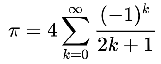

Pi est une constante qui permet de calculer tous ce qui touche le cercle/disque. Pi est parfois surnommé: constante d'Archiméde car c'est Archiméde qui le calcula la première fois.
π est une constante possédant un nombre de décimales infinis, c'est à dire que π=π ~ 3.14159265358...
Pour calculer π, on peut faire:
